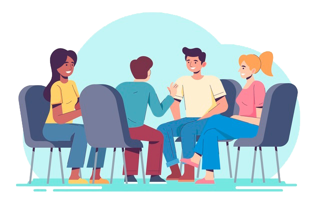

Ruçket birçok etnik kökenden, birçok şehirden, birçok fikirden insanların bir arada bulunduğu 3 yıllık bir WhatsApp grubu ve online oluşumdur. Varlığımızı online platformda sürdürdük, sürdürmeye devam ediyoruz. Yıllardır yaptığımız izolasyon politikasını kaldırdık ve yeni üye alımlarına başladık!
Ruçket, online platformlarda görebileceğiniz en agresif mizaha sahip yerlerden biridir.
Ruçket 2018 tarihli eğlence, rp ve daha birçok etkinliğin yapıldığı mizahi içeriğin fazla olduğu karamizah grubudur.
Ruçket 24.05.2018 tarihli ilk başta rp'de bir ülkenin yönetim kurulu olarak kurulmuş olan bir yapıdır. Şu an 8 üye bulundurmakla birlikte, yeni izolasyondan çıkmış ve genişleme politikası gütmektedir.
Ruçket üyesi olmak için ilk önce üyelerimizden birine ulaşmanız gerekir. Ulaşmanızın ardından Pusicikler isimli grubumuza giriş yapacaksınız. Grupta test edilmenizin ardından ana grubumuzda kesin üye statüsüyle birlikte katılacak ve Ruçket'in eğlenceli dünyasının bir üyesi olacaksınız.
Lairean ( King ) pozisyonunda bulunan Ruçket üyesi.
Fatih'ten önceki ruçket başkanıydı.
Şu anki ruçket yöneticisi.